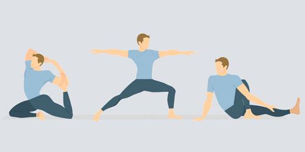
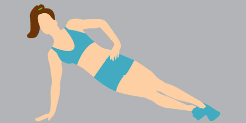

Promove o Bem Estar

Promove o Relaxamento

Aumento da Resistencia Fisica
O pilates, quando praticado de forma regular e sob orientação de um fisioterapeuta ou profissional de educação física especializado pode trazer diversos benefícios para a saúde, sendo os principais: Os principais benefícios da prática regular do pilates são: Melhorar a postura e corrigir os hábitos posturais incorretos; Aumentar a flexibilidade e a mobilidade; Melhorar a coordenação motora; Respirar melhor e de maneira mais consciência; Conseguir um bom tônus muscular, fortalecendo e tonificando o corpo; Favorecer o relaxamento mental; Aumentar a consciência corporal; Diminuir o estresse e a tensão corporal; Aumentar a vitalidade e a força; Ajudar a prevenir e reabilitar lesões músculo-esqueléticas; Diminuir o cansaço e ajudar a dormir melhor; Aliviar a dor nas costas; Melhorar a circulação sanguínea e a oxigenação do sangue.
O pilates se baseia em 6 princípios:. Centro de força: também chamado de "centro de poder", já que toda a energia necessária para realizar os exercícios é gerada do centro do corpo, coordenando todos os movimentos de maneira equilibrada; Concentração: é fundamental conectar a mente e o corpo, prestar atenção e ter consciência dos movimentos que são realizados e os músculos que são contraídos e relaxados, para trabalhar o corpo de maneira eficaz e, assim, obter seus benefícios; Controle: este princípio é importante para evitar movimentos bruscos, irregulares e causais e, assim, prevenir lesões e promover os benefícios da prática; Fluidez: no método pilates não existem movimentos estáticos ou isolados, são dinâmicos e fluidos; Precisão: é importante manter o foco para realizar cada movimento de maneira precisa, sendo necessário para que o exercício em sua totalidade seja executado corretamente, mantendo uma boa postura para prevenir lesões e, assim, obter os resultados desejados; Respiração: é indispensável aprender a respirar corretamente para ajudar na concentração, controlar os movimentos e obter uma maior capacidade pulmonar e circulação do sangue. Todos esses princípios são fundamentais para que o pilates seja praticado da melhor forma e, assim, possa garantir vários benefícios.
O pilates é um método de treinamento que pode ser realizado por pessoas de todas as idades e que pode trazer diversos benefícios para a saúde, como melhora da coordenação motora, aumento da flexibilidade e mobilidade, melhora do equilíbrio e da postura e da capacidade cardiorrespiratória
O pilates é indicado para todas as pessoas, seja crianças ou idosos, uma vez que os exercícios são adaptados para cada fase da vida e objetivos. No caso das crianças e adolescentes, o pilates é principalmente indicado para melhorar a postura e a flexibilidade, contribuindo para um crescimento e desenvolvimento mais saudável, prevenindo futuras lesões quando adultos. Nos adultos, o pilates pode ser realizado com diversos benefícios, como melhorar o estado físico e saúde em geral, tonificar o corpo, fortalecer a musculatura interna, aumentar a energia física e mental, melhorar a circulação e flexibilidade e diminuir o estresse. No casos dos idosos, o pilates costuma ser indicado para manter e/ ou melhorar a flexibilidade, melhorar a respiração, aumentar a mobilidade, a coordenação e o equilíbrio, sendo útil para prevenir quedas e fraturas, aliviar as dores nas costas, melhorar as articulações e fortalecer o corpo.
Promove o Bem Estar
Promove o Relaxamento
Aumento da Resistencia Fisica